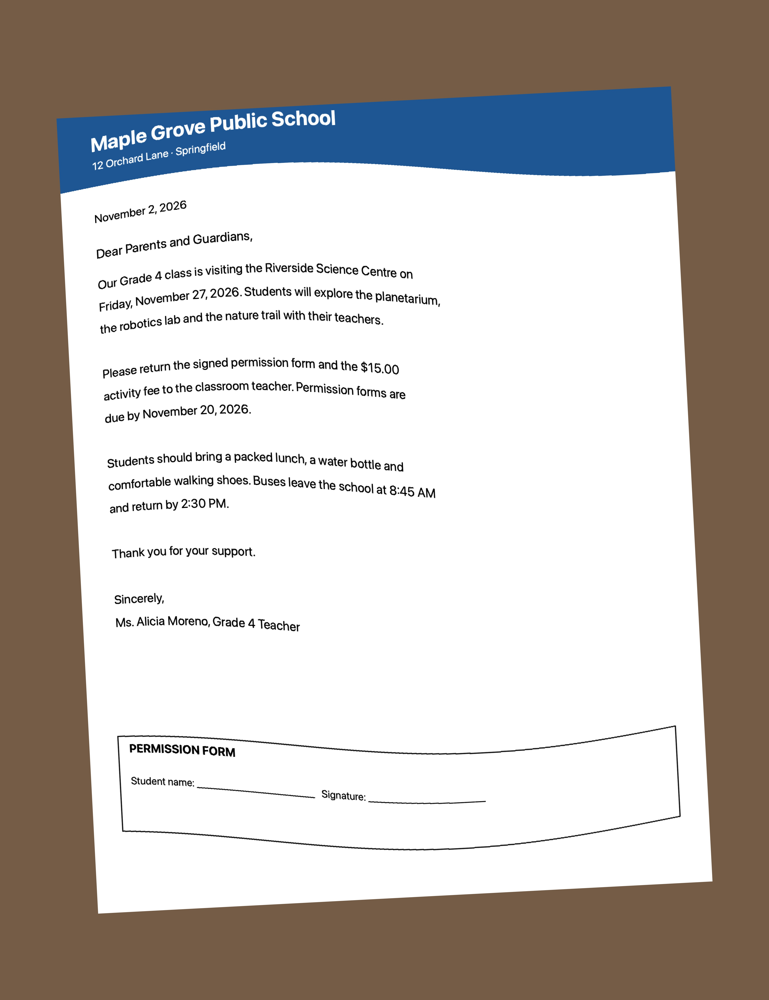
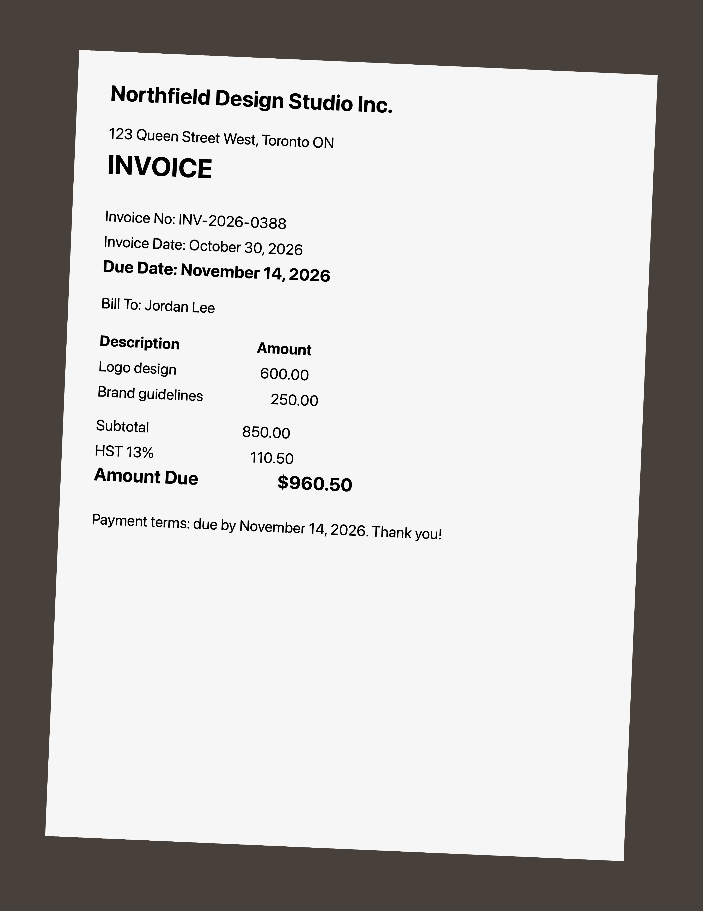
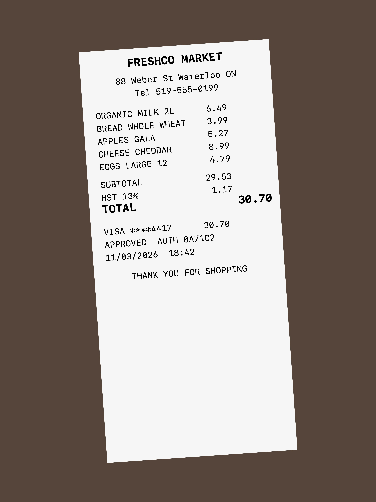
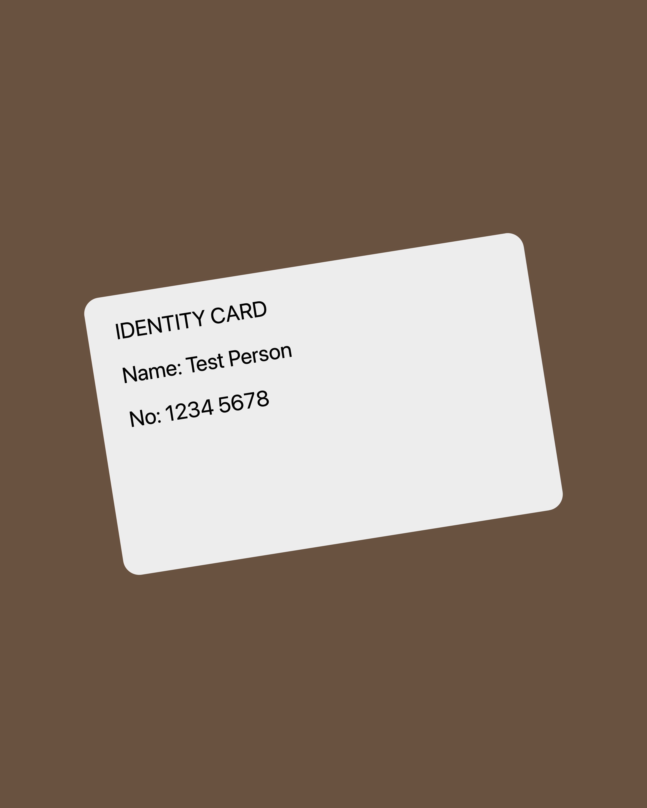

Paperwise sample documents
Made-up documents for trying Paperwise. On iPhone, open an image, tap Share › Save Image, then in Paperwise tap Photos. Or tap Files › Import from Files. You can also show an image on another screen and scan it with Scan.







